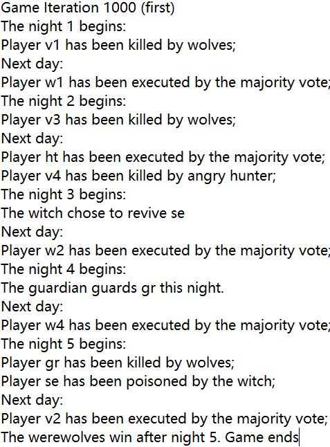

Results
Output example
Comparison
In the "naive" setting, villagers gained only 8 wins out of 1000, while werewolves gained 992. This result is scary but not unexpected, since all players were making random choices but werewolves would not pick their own group members.
The result already got much better for human side in first order deception settings. Villagers got 170 wins whereas werewolves got 830. It improves because now the villagers will vote on the basis of their knowledge set, especially relying on the discredibility score. It helps because the contradiction will occur if when the seer checked a card and make an announcement, or by someone's death.
Villagers had overwhelming victories in the second and third order deception scenarios, 732 vs 268 and 737 vs 263. Higher order knowledge certainly helps. However, this does not mean that the higher order knowledge will only help villagers. Because the voting choices of villagers with the fuzzy logic decision tool are not fully equal with those of werewolves while doing the test.
Discussion
It is a very plausible to implement the game in the fuzzy logic way, by adding a probability-like score. Because players need to punish liars to win the game while being perfect liars themselves. The higher order knowledge has been helpful when the players were making voting decisions.
For further improvement, the fuzzy logic decision approach can be utilized in various process not done in implementation. For example, players can make their attacks on members with high discredibility scores during the speech. Special villagersare using abilities more or less randomly in current implementation. They would be able to use their abilities more effectively also by this decision tool.